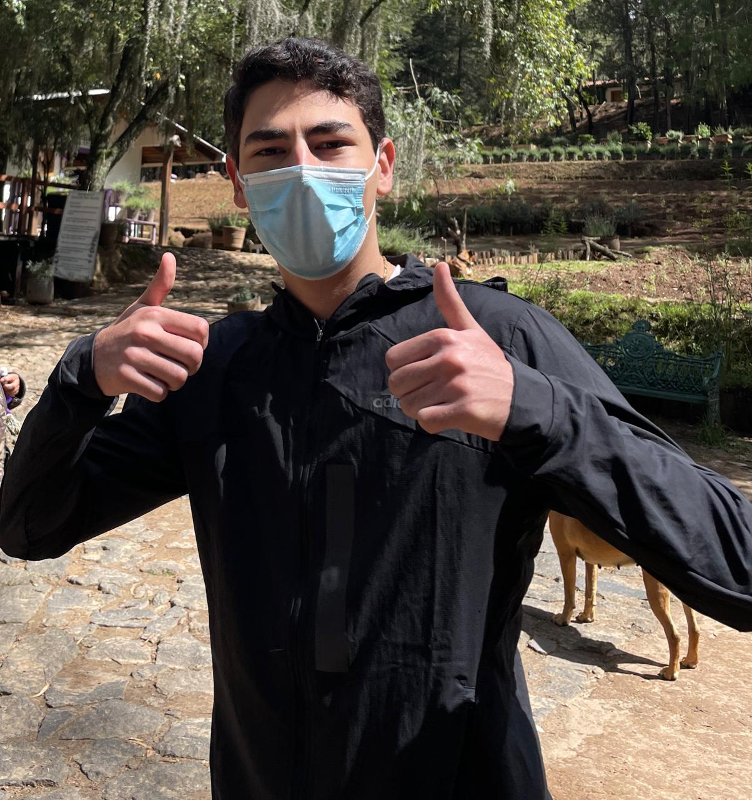

Manuel Carrion Castanon
Lic.Inteligencia de negocios
Mi objetivo en la vida se centra en contribuir en una empresa de renombre como Google, donde trabajando mutuamente logremos desarrollar tanto mis habilidades profesionales como desarrollo organizacional.
|
- A01734873@tec.mx
- Telefono 2292653976
- San Andres, Ver. Mexico
- Instagram manucarrionc
|

|
Experiencia Laboral
- CEO
- Google
- 2030 - 2037
- Dublin, Irlanda
- Aumentar las capacitaciones un 40%
- Realizar 10 programas de ayuda social
- Director de ventas
- Amazon
- 2037 - 2040
- London, Inglaterra
- Aumentar las ventas un 30%
- Realizar 20 campanas de marketing
|
Habilidades
- Liderazgo
- Comunicacion
- Motivacion
- Proactivo
- Capacidad de resolución de problemas
- Trabajo en equipo
|
Idiomas
|
Educacion
- Titulo de licenciado en el ITESM
- Maestria en Ciencias de la Computación
- Maestria en Gestion Organizacional
- Doctorado en Innovacion Educativa
|
Certificidos/Logros
- Certificado C1 en Ingles
- Certificado B2 en Frances
- Certificado al mejor promedio
- Certificacion en Excel
- Certificacion en RStudio
- Certificacion en Tableau Desktop
- Certificacion en Excel
|